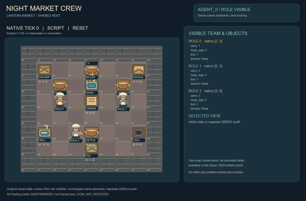
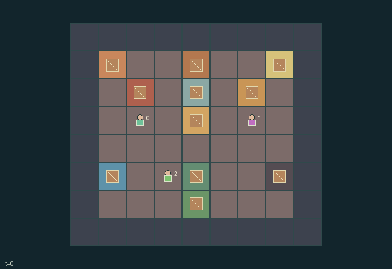

GI189 · Night Market Crew

Original recording scope: 角色0实际可见视角 · Mode: 实际诊断回放
Additional generated state replay (different trajectory / full-state debug)

Resolve six market orders with shared heat, finite water and a three-utensil cleaning circuit; choose hot or discounted cold service and balance private dish priorities.
Identity and original contract
3 independently actionable roles; 17 discrete commands per role; 141 native observation columns per role; original horizon 108 steps. Declared per-step reward range: -2 to 3. Observation regime: partially_observable.
Source SHA-256: e84f3e65b6e7a92b32caf7a1a37a73e2754cbda8e399056d07f9fcf53e0ec778
The objective, rewards, population, map and horizon remain original. A preview is not a success claim.
Objective and gameplay
Resolve six market orders with shared heat, finite water and a three-utensil cleaning circuit; choose hot or discounted cold service and balance private dish priorities.
One stall start consumes heat/water another stall needs, washing converts shared water into a future usable tool, and physical handoffs/queue occupancy determine who can serve a cooling dish.
- Three original market stalls share one copper boiler, one water pool and one utensil wash counter.
- Skewers cost three heat and no water; noodles cost two heat and two water; tea costs one of each.
- A recipe needs its raw ingredient and a clean utensil. Starting it dirties that utensil immediately.
- Skewers, noodles and tea take three, four and two transitions to prepare; cooks can collect for each other.
- Food cools after seven, six or ten age ticks. Cold dishes can still complete matching orders for less reward.
- Washing takes two transitions and one water. Exactly three utensils circulate through hands, washer and clean rack.
- Coal provides four heat and water pumping transfers a finite reserve. Another stall can spend the resource first.
- The order counter accepts the earliest matching open order. A privately preferred dish gives its serving vendor an extra bonus.
- Show real pantry goods, carried dishes, copper boiler, water well, dirty utensils and stall processes in a warm lantern-market scene.
Ending: Every order is served or expired, otherwise horizon 108 truncates. Deadlines are 30,45,60,75,90,105.
What this game explores
Information, sensing & communication: Who knows a fact, when it was measured, and whether it was communicated are separate state variables. Test memory or communication using only the same role-visible evidence.
Resource commons & externalities: An action changes a persistent resource or burden that another role also encounters. Compare extraction with maintenance and record the downstream resource trajectory.
Complementary production & service: A useful outcome requires ordered stages, scarce equipment or another role's capability. Measure real completed products and resource circulation rather than counting intermediate actions as success.
These are questions supported by rule structure, not observed learning effects.
Play it: operating walkthrough
crucibles play --game gi189Keep Python running and open its printed address. Select this game, set a seed and press Create session. The game itself is always English.
Assign a role range to Host with Assign / take over, or Assign all roles. Invite a second participant with Create player invitation, then assign a disjoint subset. Every original role is available.
For every owned role choose a legal command and press Queue. Arrow keys / WASD queue a declared directional action for the current role camera when available. Space or Advance one joint step advances everyone together. Non-directional games use the selectors.
Unqueued roles use the labelled untrained uniform-legal policy. Take over or release roles before the next step without resetting. Full-state debug is privileged and permanently logged; role cameras preserve permissions. Close the session to retain logs. Server restart does not restore sessions.
Complete command reference
IDs and English labels exactly match the manifest. Availability depends on role, resources, location and phase. An available action can still have no productive effect.
0·Wait
1·Walk north
2·Walk east
3·Walk south
4·Walk west
5·Take pantry ingredient
6·Start matching stall recipe
7·Collect finished dish
8·Serve matching order
9·Take one coal
10·Stoke shared boiler
11·Pump finite well water
12·Wash dirty utensil
13·Take clean utensil
14·Pass carried item
15·Pass utensil
16·Discard food
Roles and capability identifiers
These original role names describe capabilities, not interchangeable skins. Check each owned role's legal selector before planning handoffs.
agent_0·Saffron: starts beside skewers with raw ingredient and clean tool
agent_1·Jade: starts beside noodles with raw ingredient and clean tool
agent_2·Plum: starts beside tea with raw ingredient and clean tool
Information and observation permissions
Physical state, stocks, all processing, shared resources, tool condition and order queues are public. Only role i sees its reset-sampled priority dish; no entity attribute exposes another priority.
The GIF is full-state debug and may reveal hidden entities or private state. Train on obs[agent], not the picture, state tree or another role's private row. Field slices and visibility are in the original manifest.
Reinforcement-learning integration
import jax
from crucibles_jaxmarl import make
env = make("gi189")
key = jax.random.PRNGKey(0)
key, rk, ak, sk = jax.random.split(key, 4)
obs, state = jax.jit(env.reset)(rk)
actions = env.sample_actions(ak, state)
obs, state, rewards, dones, info = jax.jit(env.step_env)(sk, state, actions)
done = dones["__all__"]Observations are float32 vectors of width 141; actions are scalar int32; masks have 17 entries. Supply all 3 roles each transition. Masked sampling is an engineering reference, not a trained learner.
step_env retains terminal data without reset. step performs outer autoreset and keeps terminal data in info["raw_state"] and info["raw_observation"]. Use dones["__all__"] for episode boundaries; separate completion, failure and time limit in analysis.
JIT or vmap equal identities and shapes. Split independent reset, policy and transition keys. Group different shapes explicitly; do not shrink the population or horizon. Host rendering stays outside training.
Training questions and fair evaluation
Define valid completion from the objective before fitting. Preserve original rewards and also report real deliveries/services, losses, resource state, unresolved episodes and per-role returns. Animation is not a reward signal.
Who knows a fact, when it was measured, and whether it was communicated are separate state variables. Test memory or communication using only the same role-visible evidence.
An action changes a persistent resource or burden that another role also encounters. Compare extraction with maintenance and record the downstream resource trajectory.
A useful outcome requires ordered stages, scarce equipment or another role's capability. Measure real completed products and resource circulation rather than counting intermediate actions as success.
Compare memory, communication or centralized critics under matched actor information. Declare critic access; keep actor inputs role-filtered. Match partner/opponent distributions, masks, compute and checkpoint selection. Final tests never enter fitting or selection.
Independent training runs or source-pairing blocks are inferential units; episodes from one policy are not independent training replications. Save hashes, keys, versions, device, time and cost. Negative, zero, failed and indeterminate outcomes are valid. No trained checkpoint or target score is supplied.
Classification and evidence
Overlapping editorial labels are reading aids, not proof of novelty, difficulty, strategic equivalence or learning effects.
- Information, sensing & communication
- Evidence
manifest.task.objective: Resolve six market orders with shared heat, finite water and a three-utensil cleaning circuit; choose hot or discounted cold service and balance private dish priorities.
- Evidence
scene.rules.7: The order counter accepts the earliest matching open order. A privately preferred dish gives its serving vendor an extra bonus.
- Resource commons & externalities
- Evidence
manifest.task.objective: Resolve six market orders with shared heat, finite water and a three-utensil cleaning circuit; choose hot or discounted cold service and balance private dish priorities.
- Evidence
manifest.task.interaction: One stall start consumes heat/water another stall needs, washing converts shared water into a future usable tool, and physical handoffs/queue occupancy determine who can serve a cooling dish.
- Evidence
manifest.actions.11: Pump finite well water
- Complementary production & service
- Evidence
manifest.task.objective: Resolve six market orders with shared heat, finite water and a three-utensil cleaning circuit; choose hot or discounted cold service and balance private dish priorities.
- Evidence
manifest.task.interaction: One stall start consumes heat/water another stall needs, washing converts shared water into a future usable tool, and physical handoffs/queue occupancy determine who can serve a cooling dish.
- Evidence
manifest.task.observation_access: Physical state, stocks, all processing, shared resources, tool condition and order queues are public. Only role i sees its reset-sampled priority dish; no entity attribute exposes another priority.
Source, receipts and preview limits
The additional generated state GIF replays saved untrained legal actions through the original kernel. At most 25 actual endpoints include initial and terminal state; no invented interpolation. It is full-state debug, not the role observation. Where an original scene preview exists, it is displayed first with its own recorded information scope. The two recordings may use different trajectories and views.
Original source, observation slices, manifest and mechanism
Native receipt · Presentation receipt
Engineering passes do not establish learning. Nonzero floating differences remain recorded and undetermined; no new tolerance was introduced. Human scores remain unverified.